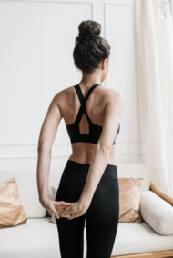

Körperliche Veränderungen als Stressreaktion
Das können Sie tun – Kleine Stellschraube
Körperhaltung und Bewegung
Körperhaltung
Wenn Sie bemerken, dass sich Ihre Körperhaltung bei einer
Emotion verändert, versuchen Sie die entgegengesetzte Haltung
einzunehmen. Bei Stress können Sie beispielsweise die Stirn
glätten, die Schultern locker hängen lassen oder in den Bauch
atmen.
Bewegung
Verändern Sie Ihre Bewegungen so, dass Sie dem zugrundeliegenden
Gefühl nicht mehr entsprechen. Wenn Sie z. B. bei Wut schnell
laufen, sprechen und gestikulieren, dann probieren Sie die
entgegengesetzten Bewegungen: laufen und sprechen Sie bewusst
langsam, legen Sie Ihre Hände in den Schoß oder verschränken Sie
sie auf dem Rücken. Mit dieser Technik können Sie ruhiger werden
und stressbedingte Emotionen abschwächen.
